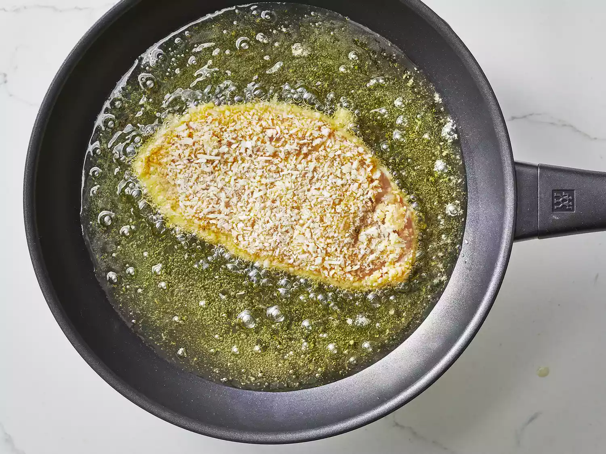

Chicken Parmesan
Chicken parmesan is my favorite dish to eat, and nothing tastes better than a home cooked chicken parmesan.
With this recipe you get a crunchy panko crumb fried chicken breast, topped with tomato sauce, with fresh mozzarella, grated parmesan, and grated provolone cheese melted on top
- Prep Time: 15 mins
- Cook Time: 20 mins
- Additional Time: 10 mins
- Total Time: 45 mins
- Servings: 4
Ingredients
- 4 skinless, boneless chicken breast halves
- salt and freshly ground black pepper to taste
- 2 large eggs
- 1 cup panko bread crumbs, or more as needed
- 3/4 cup grated parmesan cheese, divided
- 2 tablespoons all-purpose flour, or more if needed
- 1/2 cup olive oil for frying, or as needed
- 1/2 cup prepared tomato sauce
- 1/4 cup fresh mozzarella, cut into small cubes
- 1/4 cup chopped fresh basil
- 1/2 cup grated provolone cheese
- 2 tablespoons olive oil
Instructions
- Preheat an oven to 450 degrees F
- Place chicken breasts between two sheets of heavy plastic on a solid, level surface. Firmly pound chicken with the smooth side of a meat mallet to a thickenss of 1/2 inch.
- Season chicken thoroughly with salt and pepper. Using a sifter or strainer; sprinkle flour over chicken breasts, evenly coating both sides
- Beat eggs in a shallow bowl and set aside
- Mix bread crumbs and 1/2 cup parmesan cheese in a seperate bowl, set aside.
- Dip a flour-coated chicken breast in beaten eggs. Transfer breast to the bread crum mixture, pressing crumbs into both sides. Repeat for each breast. Let chicken rest for 10 to 15 minutes.
- Heat 1/2 inch olive oil in a large skillet on a medium-high heat until it begins to shimmer. Cook chicken in the hot oil until golden, about 2 minutes per side. The chicken will finish cooking in the oven.

- Transfer chicken to a baking dish. Top each breast with 2 tablespoons tomato sauce. LAuer each chicken breast with equal amounts of mozzarella cheese, fresh basil, and provolone cheese. Sprinkle remaining parmesan over top and drizzle each with 1/2 teaspon olive oil
- Bake in the preheated oven until cheese is browned and bubly and chicken breasts are no longer pink in the center, 15 to 20 minutes. Or until chicken reaches internal temperature of 165 degrees F